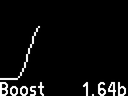
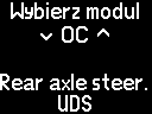
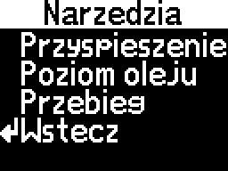
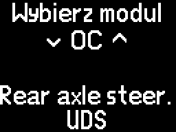
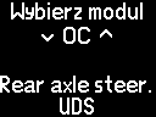
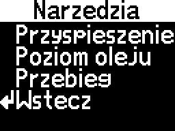
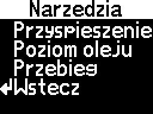

Gdy już będziesz mieć plik config.bin, przejdź do Ustawienia>Aktualizacja, połącz się z siecią Wi-Fi i przejdź do strony internetowej, tak jak wyjaśniono w odpowiednim rozdziale.
Jeśli chcesz, przejdź do Ustawienia>Menu startowe, aby zmienić ustawienia, zgodnie z wyjaśnieniami w odpowiednim rozdziale.
Obsługa menu
Menu jest obsługiwane za pomocą przycisków na dźwigni wycieraczek przedniej szyby samochodu.
Przyciski Góra/Dół zmieniają wybór, a opcje są wybierane poprzez przytrzymanie przycisku Reset.
Krótkie naciśnięcie przycisku Reset zmienia tryb ekranu zestawu wskaźników i nie może być wyłączone. Po zmianie trybu, naciśnij przycisk wielokrotnie, aż wrócisz do CANFIS.
W menu bez widocznego przycisku Wstecz, wyjście następuje poprzez przytrzymanie przycisku Reset w dowolnym miejscu.
Korzystanie z każdego menu
Menu główne
Dane ECU - wyświetl skonfigurowane zbiory pomiarówDiagnostyka - połącz się z modułem sterującym w celu diagnozyNarzędzia - dostęp do jednego z zawartych narzędziUstawienia - wyświetl lub zmień ustawienia
Dane ECU
Tutaj będą wyświetlane niestandardowe zbiory pomiarów.
Przed wgraniem konfiguracji, pojawi się następujący błąd:
Po wgraniu pliku konfiguracyjnego, pomiary będą dostępne.
Jeśli wystąpi błąd połączenia podczas odczytywania parametrów, pojawi się następujące ostrzeżenie:
Aby wyświetlić dodatkowe opcje, przytrzymaj przycisk Reset na dowolnej stronie.
Wykres - utwórz wykres z jednego z parametrów z bieżącej stronyStyl - zmień kilka rzeczy dotyczących wyświetlania zbioru pomiarówMenu główne - powrót do menu głównegoWstecz - powrót do pomiarów parametrów
Wykres
Utwórz wykres z jednego z parametrów na bieżącej stronie.
Rysuj - rozpocznij rysowanie wykresuKonfiguracja - skonfiguruj sposób rysowania wykresuWstecz - powrót do dodatkowych opcji danych ECU
Konfiguracja (Wykres)
Skonfiguruj sposób rysowania wykresu.
Posiadanie już skonfigurowanej konfiguracji grafu dla każdego parametru w pliku konfiguracyjnym sprawia, że ten krok jest opcjonalny, ale predefiniowane wartości mogą być nadal edytowane tutaj. Sprawdź rozdział Pierwsze kroki, aby uzyskać więcej informacji.
Parametr - wybierz, który pomiar z bieżącej strony ma być przedstawiony na wykresieDokladnosc - wybierz, jak dokładnie dostosować następujące opcjeMaks. wart. - wybierz maksymalną wartość, którą może przedstawiać wykresMin. wart. - wybierz minimalną wartość, którą może przedstawiać wykresCz.odsw. - wybierz, co ile milisekund ma być tworzony nowy punkt na wykresieWstecz - powrót do menu Wykres
Ustawienie Maks. wart. niższego niż Min. wart. spowoduje odwrócenie wykresu.
Cz.odsw. kontroluje tylko, jak szybko jest tworzony nowy punkt na wykresie. Parametr jest odczytywany z modułu tak szybko, jak to możliwe.
(!) Po ustawieniu Dokladnosc, otwarcie jednej z innych opcji spowoduje zaokrąglenie wartości. Na przykład, jeśli Maks. wart. jest ustawiona na 5 i jest edytowana z Dokladnosc 10, stanie się 10 podczas dostępu.
Rysuj (Wykres)
Narysuj wykres tak, jak został skonfigurowany.

Styl (Dane ECU)
Zmień wygląd menu danych ECU.
Licznik stron - wyświetl numer stronyWyrów.jedn. - jeśli jest włączone, wszystkie jednostki pomiarowe są wyrównane, co powoduje wyrównanie także wartościWsk.poł. - wyświetlający wirujący wskaźnik w prawym górnym rogu, aby wskazywać połączenie z modułamiPasek->dół - pokaż pasek zawierający tytuł strony / numer strony / wskaźnik połączenia u dołu zamiast u góryWstecz - powrót do dodatkowych opcji danych ECU
Wybranie opcji włączy lub wyłączy ją.
Jeśli strona ma tytuł lub licznik stron jest włączony, albo wskaźnik połączenia jest włączony, zostanie utworzony dodatkowy pasek na górze/dole z tymi elementami. W przeciwnym razie, pasek nie pojawi się.
Diagnostyka
Połącz się z modułem, aby wykonać operacje diagnostyczne.

Niektóre moduły obsługują protokół KWP-CAN, niektóre obsługują UDS, a niektóre obsługują oba. Jest to wskazane przez dolny wiersz na selektorze modułów.
Aby powrócić do menu głównego bez wyboru modułu, opcja Wstecz znajduje się przed modułem 01.
Jeśli wszystkie próby połączenia zawiodą, pojawi się następujący błąd:
W przeciwnym razie, jeśli połączenie zakończy się sukcesem, pojawi się następujące menu:
Tytuł - nazwa modułu (przewijana)Identyfikacja - uzyskaj informacje o moduleKody błędów - odczytaj kody błędów modułuBloki pomiaro. - odczytaj bloki pomiarowe modułu (tylko KWP-CAN)Wstecz - powrót do menu głównego
Identyfikacja (Diagnostyka)
Odczytaj informacje o zidentyfikowanym module.
Tytuł - numer sprzętowyImp. - kod importeraWSC - kod warsztatuGerät - wskaźnikCoding - tylko dla KWP-CANOstatnia linia - numer oprogramowania

Przyspieszenie - zmierz, jak szybko pojazd przyspiesza między dwiema prędkościamiPoziom oleju - odczytaj bieżący poziom olejuWstecz - powrót do menu Narzędzia
Jeśli nie ma konfiguracji lub konfiguracja nie zawiera tych narzędzi, będą niedostępne.
Aby je włączyć, postępuj zgodnie z rozdziałem Pierwsze kroki.
Przyśpieszenie (Narzędzia)
To narzędzie służy do mierzenia czasu przyspieszania między dwiema prędkościami.
Rozpocznij - uruchom narzędzie z bieżącymi ustawieniamiKonfiguracja - zmień ustawienia narzędziaWstecz - powrót do menu Narzędzia
Konfiguracja (Przyśpieszenie - Narzędzia)
Domyślny zakres narzędzia Przyśpieszenie wynosi 0-100km/h.
Start - wybierz od której prędkości rozpocząć pomiarKoniec - wybierz przy jakiej prędkości zatrzymać pomiarWstecz - powrót do menu Przyśpieszenie
Rozpocznij (Przyśpieszenie - Narzędzia)
Zakres prędkości jest pokazany w pasku tytułowym, a bieżąca prędkość jest wyświetlana w prawym dolnym rogu.
Rozpoczęcie narzędzia z prędkością wyższą niż punkt startowy wyświetli następującą wiadomość:
Rozpoczęcie narzędzia z prędkością niższą niż (lub równą) punktowi startowemu wyświetli następującą wiadomość:
Zwiększenie prędkości powyżej punktu startowego rozpocznie pomiar.
Czasomierz jest pokazywany w formacie "sekundy.milisekundy".
Jeśli zajmie to więcej niż jedną minutę osiągnięcie celu, czasomierz zostanie zastąpiony następującą wiadomością:
Gdy cel zostanie osiągnięty, czasomierz zostanie zatrzymany.
Czasomierz rozpocznie ponownie tylko jeśli prędkość spadnie poniżej wartości startowej, a następnie wzrośnie powyżej niej.
Ostateczny czas nie zniknie, jeśli prędkość spadnie poniżej zakresu.
Tutaj możesz zobaczyć i zmienić niektóre ustawienia.
Menu startow. - zmień na której stronie zacząć, gdy zapłon zostanie włączonyUst. fabrycz. - przywróć wszystkie ustawienia domyślneWersja softu - wyświetl aktualnie zainstalowaną wersję oprogramowaniaAktualizacja - otwórz sieć Wi-Fi w celu wgrywania konfiguracji, logo startowego lub aktualizacji oprogramowaniaWstecz - powrót do menu głównego
Menu startowe
Tutaj możesz zmienić na której stronie zacząć, gdy zapłon zostanie włączony.
Możesz wybrać między rozpoczęciem od menu głównego lub danych ECU.
Jeśli rozpoczęcie od danych ECU, możesz również wybrać, na której ze skonfigurowanych stron rozpocząć.
Menu - wybierz, na którym menu zacząćStrona - wybierz, na której stronie danych ECU zacząćWstecz - powrót do menu Ustawienia
Jeśli wybrano menu główne lub dane ECU, ale nie ma konfiguracji, strona nie może być zmieniona.
Ustawienia fabryczne
Tutaj możesz przywrócić wszystkie ustawienia do domyślnych.
Spowoduje to również usunięcie konfiguracji i logo startowego.
OK - zresetuj ustawieniaWstecz - powrót do menu Ustawienia bez resetowania ustawień
Po wybraniu zresetowania ustawień, zostanie wyświetlona następująca wiadomość:
Wersja softu
Tutaj możesz zobaczyć, jakie oprogramowanie jest obecnie zainstalowane.
To menu pojawi się automatycznie po aktywowaniu systemu OPS.
Wizualizacja automatycznie zmieni stronę (przód/tył), gdy zmieni się kierunek jazdy pojazdu (do przodu/do tyłu).
Możesz także ręcznie zmieniać stronę za pomocą przycisków Góra/Dół.
Wizualizacja czujników parkowania pojawi się nawet, jeśli zestaw wskaźników nie jest w "trybie nawigacji" (jeśli przycisk Reset został naciśnięty krótko, zgodnie z opisem w rozdziale Obsługa menu).
Przytrzymanie przycisku Reset lub wyłączenie systemu OPS spowoduje powrót do aktywnego menu w momencie wywołania wizualizacji.
Używanie edytora konfiguracji
Edytor konfiguracji służy do generowania pliku konfiguracyjnego, niezbędnego dla menu Dane ECU i Narzędzia.
Notatki
(!) Jeśli moduł źródłowy dla parametru korzysta z protokołu UDS, skontaktuj się z nami, abyśmy mogli pomóc Ci w konfiguracji.
Jeśli korzysta z protokołu KWP, "Blok" i "Indeks" odpowiadają numerom znalezionym w oprogramowaniu diagnostycznym.
Pola wejściowe dla liczb z przecinkami akceptują tylko znak kropki (.) i nie przecinka (,)!
Opcjonalny krok
Jeśli już masz plik konfiguracyjny, który chcesz edytować, naciśnij przycisk Edytuj poprzednią konfigurację u góry strony i wybierz plik.
Krok 1: Wybierz zawarte narzędzia
W pierwszej sekcji zobaczysz rozwijaną listę narzędzi, które możesz włączyć.
Aby włączyć narzędzie, wybierz je i zaznacz pole wyboru Włączone.
Gdy narzędzie jest włączone, możesz je skonfigurować w opcjach pod Skonfiguruj zawarte narzędzia.
Narzędzie Timer przyspieszenia
Wybierz, z którego modułu/lokalizacji pobrać bieżącą prędkość pojazdu w km/h. (!)
Narzędzie Sprawdzacz poziomu oleju
Wybierz, z którego modułu pobrać bieżący poziom oleju oraz temperaturę oleju.
Wybierz, z której lokalizacji pobrać bieżący poziom oleju w mm. (!)
Wybierz, z której lokalizacji pobrać bieżącą temperaturę oleju w °C. (!)
Wybierz Min/Maks wartości poziomu oleju dla swojego samochodu, aby poprawnie wyświetlić poziom.
Krok 2: Wybierz moduły do danych ECU
Menu Dane ECU może pokazywać parametry z maksymalnie 5 modułów KWP i 5 modułów UDS.
Tutaj wybierzesz, z których modułów chcesz odczytywać parametry.
Masz 5 "slotów" dla każdego protokołu, a kolejność modułów nie ma znaczenia.
Na przykład, jeśli chcesz otrzymać parametry z silnika (KWP), napędu AWD (KWP) i skrzyni biegów (UDS):
W kolumnie KWP wybierz numer 1 i moduł 01 - Engine.
W kolumnie KWP wybierz numer 2 i moduł 22 - AWD.
W kolumnie UDS wybierz numer 1 i moduł 02 - Auto Trans.
Krok 3: Skonfiguruj dane ECU
Tutaj skonfigurujesz każdą stronę menu Dane ECU.
W przypadku nowego startu (bez edycji wcześniejszej konfiguracji), zostanie utworzona pierwsza strona i pierwszy parametr.
Każda strona może mieć tytuł (opcjonalny) i od 1 do 5 parametrów.
Każdy parametr może mieć nazwę (przykład: Olej) oraz jednostki pomiarowe (przykład: mm), ale są one opcjonalne i można je pozostawić puste.
Strony
Aby zmienić tytuł strony, wpisz coś w polu tekstowym (lub pozostaw puste, jeśli nie chcesz tytułu).
Aby dodać nową stronę, naciśnij przycisk +.
Kiedy masz więcej stron, naciśnięcie przycisku spowoduje "wstawienie" nowej strony bezpośrednio po obecnie wybranej stronie.
Aby dodać stronę na końcu, musisz najpierw wybrać ostatnią stronę, a następnie nacisnąć +.
Aby usunąć obecnie wybraną stronę, naciśnij przycisk -.
Nie można cofnąć operacji po usunięciu!
Aby wybrać inną stronę (po dodaniu więcej), naciśnij pole z numerem strony i wybierz inną.
Parametry
Aby zmienić nazwę parametru, wpisz coś w polu tekstowym (lub pozostaw puste, jeśli nie chcesz nazwy).
Aby zmienić jednostki pomiarowe parametru, wpisz coś w polu tekstowym (lub pozostaw puste, jeśli nie chcesz jednostek pomiarowych).
Aby wstawić specjalny symbol stopni (°) dla jednostek pomiarowych, napisz litery "deg", zostaną one zastąpione.
Przykład: dla °C, napisz "degC" w polu tekstowym jednostek pomiarowych.
Aby dodać nowy parametr do strony, naciśnij przycisk +.
Kiedy masz więcej parametrów, naciśnięcie przycisku spowoduje "wstawienie" nowego parametru bezpośrednio po obecnie wybranym parametrze.
Aby dodać parametr na końcu, musisz najpierw wybrać ostatni parametr, a następnie nacisnąć +.
Aby usunąć obecnie wybrany parametr, naciśnij przycisk -.
Nie można cofnąć operacji po usunięciu!
Aby wybrać inny parametr (po dodaniu więcej), naciśnij pole z numerem parametru i wybierz inny.
Źródło parametru
Tutaj wybierzesz, z którego modułu/lokalizacji odczytywany jest bieżący parametr. (!)
Wyświetlanie wartości
Tryb: Wartość dokładna
Parametr będzie wyświetlany dokładnie tak, jak w oprogramowaniu diagnostycznym.
Dla protokołu KWP niektóre parametry będą wyświetlane jako tekst zamiast liczb.
Jeśli potrzebujesz, żeby te parametry były wyświetlane jako liczby zamiast tekstu, zaznacz pole wyboru Wartość wymuszona.
Będziesz tego używać, aby znaleźć wartość odpowiadającą tekstowi, jeśli potrzebujesz trybu Niestandardowy tekst (wyjaśnionego poniżej).
Pole wyboru Wartość wymuszona nie ma wpływu na moduły UDS.
Rozwijana lista Miejsca dziesiętne wybiera, ile cyfr jest wyświetlanych po kropce dziesiętnej (0 oznacza brak kropki dziesiętnej).
Tryb: Przemapowana wartość
Wartość parametru zostanie odwzorowana na zakres.
Aby dodać liczbę przed odwzorowaniem, wpisz tę liczbę w polu Przesunięcie (może być ujemna do odejmowania).
Następna sekcja zawiera mapę:
Wejście Min zostanie przekształcone na Wyjście Min.
Wejście Maks zostanie przekształcone na Wyjście Maks.
Każda wartość między Wejście Min a Wejście Maks zostanie przeskalowana między Wyjście Min a Wyjście Maks.
Aby zapobiec temu, żeby wartość spadała poniżej Wyjście Min, zaznacz pole wyboru Limit w tym samym rzędzie co Min.
Aby zapobiec temu, żeby wartość wzrastała ponad Wyjście Maks, zaznacz pole wyboru Limit w tym samym rzędzie co Maks.
Rozwijana lista Miejsca dziesiętne wybiera, ile cyfr jest wyświetlanych po kropce dziesiętnej (0 oznacza brak kropki dziesiętnej).
Przykład: aby wyświetlić parametr "Boost", powinieneś najpierw odjąć ciśnienie atmosferyczne (~1000 mbar), a następnie przekształcić z mbar na bar.
Wpisz -1000 w polu Przesunięcie do odjęcia ciśnienia atmosferycznego (możesz wpisać liczbę bliższą swojemu ciśnieniu).
Wpisz 0 dla Wejście Min i Wyjście Min, 1000 dla Wejście Maks i 1 dla Wyjście Maks. Teraz jest przeliczone z mbar na bar (dzielenie przez 1000).
Zaznacz pole wyboru Limit w tym samym rzędzie co Min. Teraz wartość nie może spaść poniżej zera, jeśli wejście jest mniejsze niż ciśnienie atmosferyczne, ale może przekroczyć 1, jeśli wejście przekracza 1000.
Wybierz liczbę miejsc po przecinku według preferencji.
Tryb: Niestandardowy tekst
Zamiast wyświetlać wartość, możesz ustawić własny niestandardowy tekst na podstawie wartości parametru.
Wszystkie liczby wejściowe dla warunków akceptują tylko liczby całkowite, bez miejsc dziesiętnych.
Warunek: Jeśli wartość / jeśli nie wartość
Jeśli parametr jest równy Wartość, wyświetla pierwszy tekst (Jeśli wartość).
Jeśli parametr nie jest równy Wartość, wyświetla drugi tekst (Jeśli nie wartość).
Warunek: Jeśli wewnątrz / poza zakresem
Jeśli parametr mieści się między Min/Maks, wyświetla pierwszy tekst (Wewnątrz).
Jeśli parametr jest niższy niż Min lub wyższy niż Maks, wyświetla drugi tekst (Poza).
Warunek: Jeśli poniżej / wewnątrz / powyżej zakresu
Jeśli parametr jest niższy niż Min, wyświetla pierwszy tekst (< min).
Jeśli parametr mieści się między Min/Maks, wyświetla drugi tekst ([min, maks]).
Jeśli parametr jest wyższy niż Maks, wyświetla trzeci tekst (> maks).
Przykład: otrzymujesz status ciśnienia oleju z Zestawu Wskaźników (KWP), który pojawia się jako tekst ("Oil Pr. 2 <min" / "Oil Pr. 2 OK"), ale chcesz przekształcić to tylko na "<min" / "OK".
W Wyświetlanie wartości, wybierz tryb Wartość dokładna i zaznacz pole wyboru Wartość wymuszona, aby przekształcić tekst na liczbę, a następnie zapisz tę konfigurację i wgraj ją.
Zobaczysz, że "Oil Pr. 2 OK" stało się liczbą 31.
Edytuj konfigurację i teraz w Wyświetlanie wartości wybierz tryb Niestandardowy tekst oraz warunek Jeśli wartość / jeśli nie wartość.
Wpisz liczbę 31 jako Wartość oraz tekst "OK" w pierwszym polu i "<min" w drugim polu.
Teraz wyświetla się niestandardowy tekst.
Ostrzeżenie o wartości
Tutaj możesz skonfigurować tryb ostrzeżenia, na przykład, jeśli wartość parametru wykracza poza normalne limity.
Kiedy ostrzeżenie zostaje wywołane, wartość parametru (liczba/tekst) zaczyna migotać, aż błąd zniknie.
Wszystkie liczby wejściowe akceptują tylko liczby całkowite, bez miejsc dziesiętnych.
Tryb: Wyłączone
Brak ostrzeżenia dla tego parametru.
Tryb: Jeśli dokładna wartość
Ostrzeżenie zostanie wywołane, jeśli wartość parametru jest taka sama, jaką wybrałeś.
Tryb: Jeśli nie dokładna wartość
Ostrzeżenie zostanie wywołane, jeśli wartość parametru nie jest taka sama, jaką wybrałeś.
Tryb: Jeśli w zakresie
Ostrzeżenie zostanie wywołane, jeśli wartość parametru mieści się między Min/Maks, które wybrałeś.
Tryb: Jeśli poza zakresem
Ostrzeżenie zostanie wywołane, jeśli wartość parametru nie mieści się między Min/Maks, które wybrałeś.
Przykład: w poprzednim przykładzie z ciśnieniem oleju, jeśli chcesz otrzymać ostrzeżenie, gdy staje się "<min", możesz ustawić tryb na Jeśli nie dokładna wartość i wpisać liczbę 31 jako Wartość.
Parametry wykresu
Tutaj możesz skonfigurować domyślne wartości, które są stosowane, gdy wybierasz parametr do wykresu.
Możesz także ustawić lub zmodyfikować je w menu Wykres menu, ale ustawienie ich tutaj ułatwi sprawę.
Możesz również wprowadzać tutaj wartości ułamkowe, podczas gdy w menu możesz używać tylko liczb całkowitych.
Ostrzeżenie: jeśli edytujesz wartość ułamkową w menu, zostanie ona zmieniona na liczbę całkowitą.
Wartość ułamkowa pozostanie zastosowana, dopóki nie zostanie ona zmieniona.
Min. wart. - najniższa wartość, jaką może pokazać wykresMaks. wart. - najwyższa wartość, jaką może pokazać wykresCz. odsw. - jak szybko rysować punkty (mierzona w milisekundach)
Parametry są odczytywane z modułu tak szybko, jak to możliwe; Cz. odsw. zmienia tylko, jak szybko są rysowane nowe punkty.
Jeśli Min. wart. ma wyższą wartość niż Maks. wart., wykres zostanie odwrócony.
Przykład: Ustawienie Min. wart. na 0, Maks. wart. na 1000 i Cz. odsw. na 150 oznacza, że wykres będzie pokazywał wartości między 0 a 1000, a nowy punkt zostanie narysowany co 150 ms.
Krok 4: Pobierać
Po skonfigurowaniu wszystkiego, naciśnij przycisk Pobierz aktualną konfigurację na dole strony.
Plik config.bin zostanie pobrany, proszę zapisz go na swoim urządzeniu.
Korzystanie z witryny aktualizacji
Aby uzyskać dostęp do strony internetowej, postępuj zgodnie z instrukcjami z menu Aktualizacja.
Konfiguracja
Wybierz plik .bin - wybierz plik config.bin z urządzeniaWgraj - wgraj wybrany plik konfiguracyjnyPobierz - pobierz obecnie zainstalowany plik konfiguracyjny (do edycji)
Zaznacz pole wyboru Włącz logo startowe, aby je włączyć.
Wybierz plik .bmp - wybierz obraz bitmapowy z urządzeniaWspółrzędna X - pozycja pozioma lewego górnego rogu na ekranie (0-63)Współrzędna Y - pozycja pionowa lewego górnego rogu na ekranie (0-47)Czas trwania - ile milisekund obraz pozostaje na ekranieUstaw - wgraj wybrane logo startowe z jego ustawieniami
Akceptowane są tylko obrazy w formacie .bmp, a preferowany jest monochromatyczny 1-bit.
Naciśnięcie przycisku Ustaw spowoduje podgląd logo startowego na ekranie.
(!) Proszę unikać naciskania przycisku Ustaw, gdy logo jest wyświetlane!
Możliwe jest pominięcie logo startowego przed zakończeniem czasu trwania, naciskając dowolny przycisk (Góra/Dół/Reset).
Jeśli jest wgrane logo startowe, można je usunąć, odznaczając pole wyboru Włącz logo startowe i naciskając Usuń.
Po wybraniu pliku i naciśnięciu Aktualizuj, pasek postępu zacznie się wypełniać.
Proszę nie wyłączać zapłonu ani nie rozłączać Wi-Fi podczas aktualizacji.
Poczekaj, aż otrzymasz komunikat "Gotowe." na stronie internetowej.
Jeśli aktualizacja nie powiedzie się, zobaczysz standardowe główne menu.
Jeśli aktualizacja zakończy się sukcesem, zostanie wyświetlony następujący komunikat:
Jeśli pasek postępu nie wypełni się całkowicie, ale widzisz komunikat "Gotowe." (a ekran pokazuje główne menu), spróbuj ponownie zaktualizować, być może używając innego pliku.
Ponieważ ustawienia zostały zresetowane, będziesz musiał ponownie wgrać swój plik konfiguracyjny i logo startowe.


 



 
